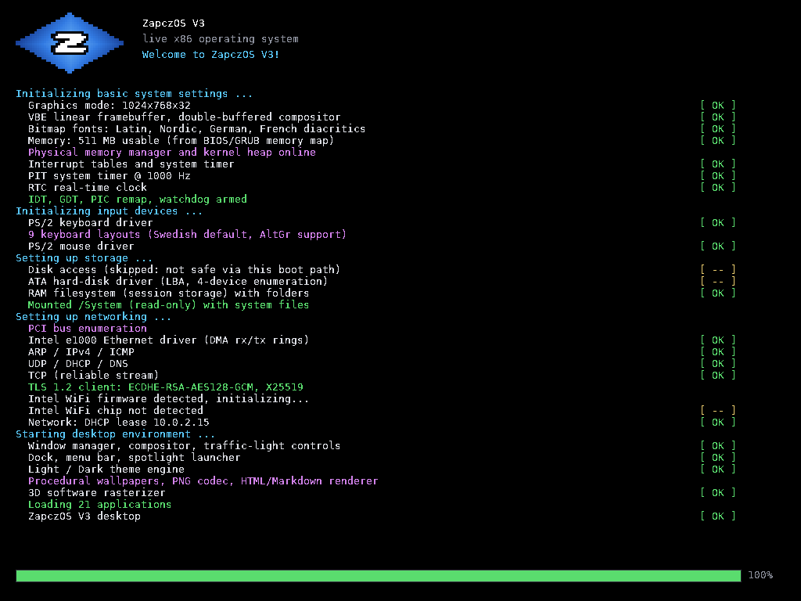
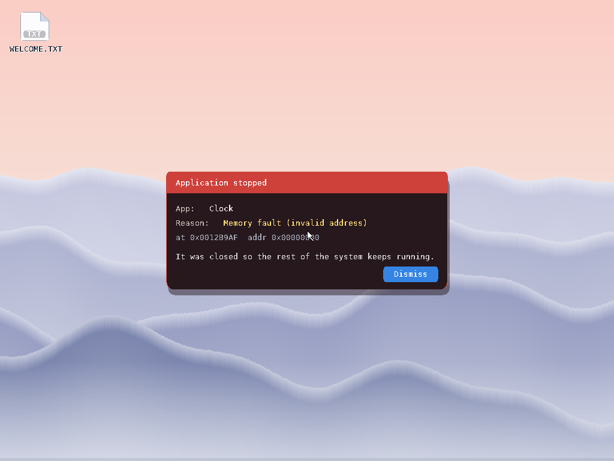

Current public release
ZapczOS V3
A small independent operating system project with bootable images, source packages, browser demos, and command-line tools kept in one public archive.
- Image
- ISO
- Size
- 74.7 MB
- Source
- 11.3 MB

Release index
Downloads
Build
File
Type
Action
System captures
Screens


Utilities
Tools
Zapcz Shell
Standalone command-line utility for Windows builds and local testing.
Bionic Reading
Chrome extension that bolds the leading letters of every word so the eye has a fixation target, with a fixation slider and a per-site switch. Unzip it, open the extensions page, turn on developer mode and load it unpacked. The toggle in the navigation bar above runs the same effect on this page.